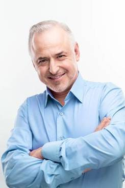
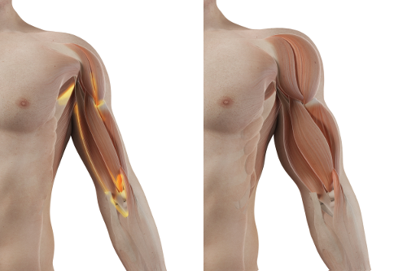

За 1 месяц вы наберете 10 кг крепких мышц таких же твердых, как камень, без упражнений и диет, эффект подтвержден независимыми медицинскими тестами.
Даниэль
Я профессор Карлос Ортис Торрес, ученый, специалист в области генной инженерии. На этой странице я хочу представить вам величайшее достижение в моей жизни, за которое я только что был номинирован на азиатский эквивалент Нобелевской премии: премию Конфуция. Я разработал формулу, стимулирующую синтез белка, способствующую максимальному увеличению мышечной массы. Благодаря моей методике каждый мужчина может автоматически и на постоянной основе набрать 10 кг чистой мышечной массы за 1 месяц.
Итак, если вы хотите:
- набрать 10 кг мышечной массы за 1 месяц автоматически, без тренажерного зала и диет;
- Сформируйте твердые как камень мышцы по всему телу, не поднимая тяжести, не тренируясь и не получая травм;
- сделайте "черепаху" на животе - даже если в данный момент вы видите только жировые складки;
- Превратите жир в сильные, твердые мышцы, даже если вы боретесь с лишним весом или ожирением
- получить в 4 раза больше энергии и в 5 раз больше мышечной силы и, таким образом, чувствовать себя настоящим мужчиной...
... и если вы хотите достичь всего этого без чрезмерных тренировок, опасных пищевых добавок, изнурительных диет и, следовательно, сэкономить десятки тысяч евро - прочтите то, что я хочу вам рассказать.
Неважно, сколько вам лет или сколько времени вы пытаетесь добиться мускулистой фигуры. Даже если вы слышали, что с вашим типом телосложения добиться результатов невозмжно, потому что вы просто худы или полны и обречены на провал ... Знайте, что через месяц вы сможете наслаждаться 10 кг твердых мышц, не ходя в спортзал!
Здесь я объясняю, почему моя формула является отличной альтернативой диетам, добавкам и невыносимым упражнениям в тренажерном зале:
- вы наберете 10 кг мышц за 1 месяц, достижение большего эффекта, чем за 3 года интенсивных тренировок;
- вы автоматически приобретете крепкие мышцы, без усилий и без жертв, даже когда вы лежите перед телевизором, читаете газеты или спите
- не нужно придерживаться какой-либо диеты, - потому что усиленный рост мышечной ткани происходит на уровне ДНК;
- вы избежите последствий травм или травм мышц, суставов и позвоночника, которые являются конечным результатом тренировок;
- вы защитите свое здоровье, вместо того, чтобы травить организм опасными пищевыми добавками и стимуляторами;
- вы сэкономите время, вместо того, чтобы проводить половину жизни в тренажерном зале;
- Вы сэкономите деньги, вместо того, чтобы тратить их на тренажерные залы и диетологов.
Я разработал внутригенный метод, который автоматически создает 10 кг чистой мышечной массы за 1 месяц.
Благодаря этому вам не придется заниматься спортом, соблюдать диету или травить себя подозрительными добавками и препаратами. Вы забудете все проблемы и унижения, которые волновали вас из-за неспортивной, слишком худой или полной фигуры. Вы начнете наращивать чистую мышечную массу, занимаясь повседневными делами: идя на работу, выпивая чашку чая, отвечая на телефонные звонки. Каждое движение активирует регенеративные процессы мышечных волокон и стимулирует синтез белка, который автоматически и постоянно строит чистую мышечную массу.
И все потому, что я разработал внутригенную формулу, которая автоматически создает 10 кг чистой мышечной массы за 1 месяц. Как я это сделал?
Я хотел помочь своему брату сформировать атлетическую мужскую фигуру, которой он бы гордился.
Последние исследования Института Спорта показывают, что 62% мужчин в Испании есть проблема низкой самооценки, из-за отсутствия мужской фигуры, в то время как 4 из 10 из них воспринимаются как не-мужчины. К сожалению, эта проблема затронула и моего младшего брата-Хуана.
Мой брат всегда был хрупким, у него были узкие плечи, но никто в семье не думал, что он чувствует себя плохо в своем теле. Все изменилось, когда он пошел на свою первую работу и влюбился в девушку, которую он встретил там.
У него начались проблемы со сном, у него потели руки... он думал, что болен, но он был "просто" влюблен. Это была платоническая любовь. Мой брат был довольно застенчивым и неуверенным, он боялся быть отвергнутым.
Через несколько месяцев, на корпоративной вечеринке, он, наконец, нашел в себе мужество подойти к девушке и пригласить ее в кино. Он ожидал "нет", но она согласилась. Мой брат был на седьмом небе. В течение следующих нескольких дней он не говорил ничего, кроме свидания и девушки своей мечты.
Он спланировал все до мельчайших деталей: кино, романтический фильм, прогулку и ужин. Они встретились перед кинотеатром. Когда девушка пришла, они стояли в очереди у стойки. Они разговаривали, смеялись и даже не слышали, чтобы кто-то им что-то говорил. Внезапно мой брат почувствовал, как кто-то похлопал его по плечу и сказал: "Мэм, у вас упал шарф". Мой брат покраснел. "Мадам" - этот человек принял его за женщину только потому, что он был худой и имел узкие плечи... девушка удивилась... Мой брат, однако, хотел вести себя элегантно и остался до конца фильма. Он едва мог сидеть в этом кресле, но после фильма нашел оправдание и убежал.
После этого инцидента Хуан закрылся. Он не звонил никому из семьи, отключил телефон. Никто не знал, что с ним происходит. Мы все страшно переживали за него.
Разрушил своё здоровье и психику
Хуан полностью изолировал себя от мира. С этого момента все, что имело значение, было спортзалом, новыми друзьями и различными добавками, которые они ему давали. Он поднимал все больше и больше веса, напрягая свое тело. Он сделал все, что мог, чтобы изменить свою генетику. Он хотел укрепить свои мышцы, начиная с узких плеч. Тяжелые тренировки в спортзале ему не помогли. На его хрупком теле не появилось ни одной мышцы. В конце концов он начал покупать опасные ускорители роста мышц, которые обещали превратить его в культуриста. Он все еще не знал, что рискует своей жизнью. Постоянные тяжелые тренировки, нездоровая мотивация, ненависть к своему телу и опасные препараты разрушали его здоровье и психику.
Хуже всего то, что становилось все хуже и хуже. Он не вернулся к работе, он не мог вынести позора и унижения перед этой девушкой. Он просто обратился к родителям, чтобы попросить у них денег. Он создал большой долг своей семье и большинству своих друзей, просто чтобы иметь возможность заплатить за тренажерный зал, личного тренера, спортивную одежду, бустеры и добавки, которые он принимал.
Он ненавидел свое тело до такой степени, что стал уничтожать и мучить его. Тренажерный зал превратился в своего рода комнату пыток. Он думал, что делает хорошее дело, наращивая мускулы, но на самом деле он изнашивал свои суставы и свое тело в целом. Однажды его организм отказался подчиняться изнурительным тренировкам. Он потерял сознание, и на него упала штанга, которую он поднимал. Он попал в реанимацию. Я чуть не потерял брата ...
Как я изобрел и запатентовал формулу для роста мышц?
Я должен был помочь своему брату в стремлении добиться атлетической мужской фигуры, которой он мог бы гордиться: без тренажерного зала, без диет и без опасных добавок. Я хотел, чтобы у него было тело, в котором он чувствовал бы себя на 100% мужчиной. Когда я пошел в больницу и посмотрел на Хуана, мне пришла в голову мысль: я ведь ученый! Я принимал участие в открытии множества веществ, которые эффективно борются с различными заболеваниями, влияют на ткани и гены. Почему бы не разработать безопасную и эффективную формулу автоматического роста мышц? И тут я начал поиски ...
В течение шести месяцев я проводил интенсивные лабораторные исследования. Я пробовал разные комбинации активных веществ на моем брате. Отмечу лишь, что все они были на 100% натуральными и безопасными для организма. Научные знания и небольшая удача быстро привели к такому результату: я разработал уникальную формулу, которая регенерирует мышечные волокна, стимулирует синтез белка, и сразу же подверг ее масштабным исследованиям. Эффективность 98% подтверждена крупнейшими исследовательскими центрами Европы и США! Во время тестирования моя внутригенная формула уже помогла 7000 мужчинам набрать 10 кг чистой мышечной массы.
Хуан, после всего лишь 1 недели применения этой формулы, активировал синтез белка и начал набирать мышечную массу в 8 раз быстрее, чем когда он совершал самоистязание в тренажерном зале и травился всякими добавками. И это было только начало. На следующей неделе его хрупкие мышцы взорвались! Появились бицепсы, как у спортсмена UFC! День ото дня он крепчал, становился похож на профессионального бодибилдера. Мускулы всего тела были твердыми, крепкими и сильными.
Всего через 3 недели мой брат, глядя на себя в зеркало, закричал: «Брат, ты изобрел формулу для роста мышц! Чтобы добиться таких результатов, мне пришлось бы 6 лет мучить себя в спортзале.! Ты гений! "

Мой брат набрал 10 кг мышечной массы и достиг желаемого, атлетической мужской фигуры, которой теперь гордится.
Он набрал в общей сложности 10 кг чистой мышечной массы всего за месяц. Полный энергии, он вернулся к жизни, нашел работу и, прежде всего ... у него хватило смелости поговорить с девушкой, в которую он все еще был влюблен. И знаешь что? Она чуть не упала в обморок, когда увидела его! Она ожидала увидеть тощего парня и вместо этого встретила настоящего мужчину с мускулами, похожего на культуриста!
Позвольте мне кратко объяснить, почему у некоторых мужчин есть мышцы, такие как у культуристов, в то время как другие худые или толстые. Этот процесс очень сложный, но я постараюсь объяснить его на языке, понятном человеку, не имеющему отношения к науке.
Знайте, что мускулистая фигура не всегда результат ежедневных тренировок. Конечно, вы знаете кого-то, кто тренируется почти каждый день и не похож на культуриста. Это потому, что не все знают о синтезе белка. Это ген, который есть у каждого человека, но когда он не активирован, он блокирует естественный, автоматический рост мышц.
Вот почему моя задача состояла в том, чтобы создать формулу, которая имела бы радикальный эффект. Активируйте синтез белка, затем активируйте мышечную ткань для автоматического, быстрого, постоянного и безопасного роста. Я сделал это! Я разработал свою собственную внутригенную формулу. Я назвал ее FortuMax капли.
Почему моя внутригенная формула была названа "патентом на мышечный взрыв"?
ЭФФЕКТИВНОСТЬ В СТРОИТЕЛЬСТВЕ МЫШЕЧНОЙ ТКАНИ БОЛЕЕ 98%
ДО
ПОСЛЕ
Пока все это может показаться чудом. Но это факт, подтвержденный случаем моего брата и 7000 других мужчин, которые уже набрали 10 кг мышечной массы за 1 месяц. Кроме того, эффективность внутригенной формулы была доказана испанским исследовательским центром в Барселоне. Это глобальное открытие, которое заслужило признание и восхищение ведущих специалистов в области генетики, диетологии и профессиональных бодибилдеров.
ФОРМУЛА 100% БЕЗОПАСНА И ПРОСТА В ПРИМЕНЕНИИ
Натуральные ингредиенты творят чудеса - науке просто нужно разработать идеальный состав! Это девиз, которым я руководствовался при создании внутригенной формулы. Формула содержит только натуральные, безопасные и суперэффективные вещества. Капли FortuMax - это пищевая добавка, которая содержит комплекс специально подобранных активных ингредиентов, которые поддерживают процессы регенерации мышечных волокон и стимулируют синтез белка, способствуя максимальному увеличению мышечной массы. Экстракты растений, витамины и микроэлементы активно ускоряют обменные процессы, в результате повышается работоспособность всего организма и повышается эффективность во время тренировок. В основе препарата исключительно натуральные ингредиенты, легко усваиваются и безопасны в применении. Уникальная формула ускоряет развитие мышечной массы, регулирует гормональный фон и активно поддерживает физическую работоспособность. Кроме того, вы получите дополнительные 10 кг твердых и сильных мышц! Для достижения наилучших результатов рекомендуется принимать 60 капель в день.
Каждый, кто привык к вашей худощавой или полной фигуре, будет удивлен, увидев 10 кг твердых мышц на вашем теле!

ПРИРОСТ МЫШЦ НА 10 КГ ЗА 1 МЕСЯЦ
НА 70% БОЛЬШЕ МОЩНОСТИ


УСКОРЕННЫЙ МЕТАБОЛИЗМ

ПРОСТОТА В ИСПОЛЬЗОВАНИИ

АВТОМАТИЧЕСКИЙ РОСТ МЫШЦ БЕЗ ДИЕТ И УПРАЖНЕНИЙ
ЭКОНОМИЯ ДЕНЕГ
Вы можете продолжать изнурять себя в тренажерном зале. Вы также можете продолжать травить себя опасными добавками и усилителями роста ... Но почему, когда я гарантирую вам быстрый, легкий и недорогой способ набрать 10 кг чистой мышечной массы? Требуется всего 1 месяц, чтобы присоединиться к 7000 довольным пользователям капель FortuMax, которые уже наслаждаются своей фигурой атлета.
Вы ничем не рискуете!
С каплями FortuMax вы наберете 10 кг мышц за 1 месяц. Кроме того, вы ничем не рискуете! Подтверждая свой успех, моя формула получила престижную гарантию качества за оригинальность, качество и результат.
Гарантия тройного качества
1. Гарантированная оригинальность капель FortuMax в внутригенной формуле, основанной на сильных веществах, которые активируют рост мышечной ткани. Эффективность подтверждена клиническими испытаниями. Это единственная формула, столь инновационная и эффективная. По этой причине вы можете быть уверены, что получите оригинальный продукт, доступный только на этом веб-сайте.
2. Гарантированное качество: благодаря передовому процессу производства внутригенной формулы капли FortuMax соответствуют высочайшим стандартам качества. Ради вашего здоровья и хорошего самочувствия концентрация активных веществ подобрана таким образом, чтобы формула была полностью безопасной. Все это для того, чтобы эффект на 100% оправдал ваши ожидания.
3. Результат гарантирован: многочисленные лабораторные и потребительские тесты подтверждают максимальную эффективность капель FortuMax. Основываясь на этих результатах, формула получила признание специалистов по всему миру, которые рекомендуют ее своим клиентам. Они уверены, что за 1 месяц вы наберете 10 кг чистой мышечной массы (вне зависимости от фигуры).
Набрать 10 кг мышц за 1 месяц быстро, легко и экономично
Получите капли FortuMax со скидкой 50%